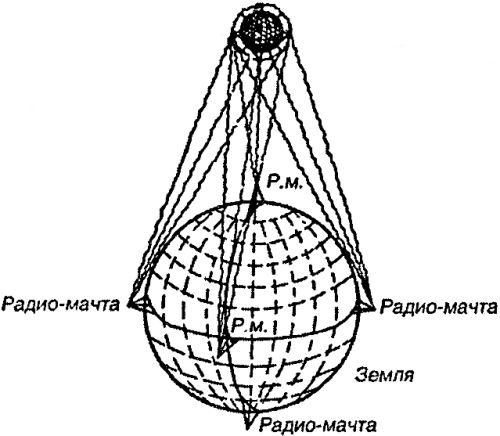

Межпланетные радиокорабли
Если все вышеперечисленные идеи начала XX века в той или иной степени оказались востребованы в ходе дальнейшего прогресса в космической отрасли, то тема, которую мы затронем ниже, еще ждет своего воплощения.
Речь идет о возможности беспроволочной передачи энергии на большие расстояния, что позволило бы заметно снизить общий вес любого космического корабля и увеличить продолжительность его полета.
Первым эту идею применительно к проблеме межпланетных перелетов высказал популяризатор космонавтики Николай Алексеевич Рынин, опубликовавший в 20-е годы серию статей и книг, в которых были собраны, систематизированы и проанализированы практически все известные в то время проекты космических кораблей и технологий. (В скобках признаюсь, что настоящая глава во многом зиждется именно на работах Николая Алексеевича.) В книге-фантазии Рынина «В воздушном океане», изданной в 1924 году, описан проект вымышленного японского инженера Ямато, который якобы предложил организовать полет на Луну.
Ямато полагал, что Земля представляет собой громадный магнит, окруженный зонами «магнитной напряженности». Корабль Ямато должен по команде пилота заряжаться либо «положительным», либо «отрицательным» магнетизмом и в зависимости от этого или притягиваться к Земле, или отталкиваться от нее. Аппараты, создающие «магнетизм», находятся непосредственно на корабле, а вот энергия для них поставляется с Земли при помощи шести мощных земных «радиостанций», расположенных в Токио, Мельбурне, Лондоне, Капштадте, Денвере и Сант-Яго.

Кроме прочего, Ямато подробно разработал принципы орбитальной навигации. Например, путем вращения плоскости индукции генераторов корабля он предполагал ориентироваться в пространстве, так как «зоны разных магнитных напряжений вокруг Земли долго сохраняют свое положение. Зная же угол наклона плоскости индукции к данной зоне, можно определить и положение корабля относительно Земли».
В 1926 году увидел свет роман-утопия Александра Ярославского «Аргонавты вселенной», в котором рассказывается об очередной экспедиции на Луну на реактивном корабле, движимом силой отдачи при «разложении радия». Вот как автор описывает главную часть лунного корабля — источник энергии:
«В маленькой металлической коробке, похожей на большой портсигар, очень тяжелой, сосредоточена страшная, неизмеримая сила: стоит нажать рычажок, и из коробки вытечет один атом освобожденного радия, которого будет более чемдостаточно, чтобы взорвать большой город».
Наивность подобного утверждения сегодня очевидна, но не будем забывать, что до открытия цепной реакции урана и первых оценочных расчетов высвобождаемой при этом энергии, сделанных немецким физиком Отто Ганом, оставалось еще двенадцать лет, а романисты имели довольно смутное представление о свойствах радиоактивных материалов.
Корабль Ярославского, названный «Победителем», имел удлиненную форму с тупым носом и «реактивной трубой» на корме. Для спуска на Луну или на Землю в передней части корабля был предусмотрен второй реактивный «контр-двигатель».
Связь с Землей обеспечивалась посредством радиотелефона; для этой цели на одном из островов группы Самоа в Тихом океане, где строился «Победитель», были воздвигнуты девять радиобашен, из которых одна, центральная, достигала высоты 750 метров.
Автор также сообщает, что при помощи этих башен на корабль можно было пересылать «энергию». К сожалению, радий таким образом транспортировать нельзя, а потому межпланетным путешественникам, не озаботившимся о достаточном запасе радия на борту, пришлось буквально выклянчивать его бесценные крупицы у жителей Луны. Интересно, а что бы они делали, не окажись на Луне жителей?..
Еще более необычный (и самый невероятный!) принцип движения межпланетного корабля представлен в романе датского писателя Соруса Михаэлиса «Небесный корабль» (1921 год).
Датчанин на многих страницах довольно красочно описывает сон (или бред?), увиденный итальянским солдатом Эрколэ Сабенэ за несколько секунд до гибели от газовой атаки. В этом сне к нему приходит спасение в виде межпланетного корабля «Космополис», пролетавшего над окопами по дороге на Марс и случайно захватившего умирающего солдата якорем.
Корабль «Космополис» имел вид шара с целым рядом сфероидальных хрустальных окон, которые снаружи закрывались выдвижными стальными щитами. Внутри шар был разгорожен на каюты, проходы, залы и обсерватории, при этом многочисленные помещения сходились лучами в центре и могли вращаться во все стороны вокруг этого центра.
Вот как объясняет один из пассажиров корабля, австриец Крафт, принципы движения корабля своему спутнику Эрколэ:
«Всякое небесное тело обладает своим спектром. Спектральный анализ — это, так сказать, особый способ сигнализации каждого отдельного небесного тела. Мы с помощью радия получаем совершенно особый вид звездных спектров, более сильных и ярких, чем прежде; они точнейшим образом осведомляют нас об элементах каждого тела, о его весе, величине, плотности и космической силе. Вот такой радиоспектр Марса и является для нас одновременно двигательным и управляющим аппаратом. Он действует подобно присасывающему диску, излучающему ток по направлению к планете, к которой мы стремимся. Посредством усиления этого тока мы преодолеем силу земного притяжения… Чтобы оторваться от Земли, нужно только обладать скоростью 11,5 километров в секунду. А мы можем с помощью тока, образовавшегося между Марсом и его радиоспектром — тут, под нашими ногами — добиться гораздо большей скорости. Мы беспрерывно и беспрепятственно падаем сквозь эфир в мировое пространство, словно влекомые невидимою нитью через всю вселенную. С нашим радиоспектром и его током мы можем опуститься только на ту планету, к которой обращены наши ноги. Этот же радиоспектр управляет положением телескопа, который все время остается направленным на Марс».
Разумеется, романисты не могли довольствоваться гипотетической возможностью пересылать с Земли в космос только энергию и ничего, кроме энергии. Воображение звало выше и дальше. Сам собой напрашивался проект передачи по радио материальных тел — сегодня подобный фантастический способ перемещения в пространстве принято называть «телепортацией».
В сущности, эта идея является прямым развитием представлений оккультистов о полетах в астрале и прочих высших сферах, населенных духами, — с той лишь разницей, что медитацию и наркотики здесь заменил «точный научный расчет».
Среди произведений на тему передачи материальных тел на большие расстояния особое место занимает рассказ А. Горша «Экспресс-молния», опубликованный в журнале «Мир приключений» в 1928 году. Это, по-видимому, первый рассказ, где оккультная «практика» полностью исключена из сюжета. Читая его, мы точно знаем, что происходящее не приснилось персонажу, как в знаменитой повести Константина Циолковского «На Луне», и в кустах вместе с пресловутым роялем не сокрыт какой-нибудь «луч Барсума», как у Эдгара Берроуза в «Принцессе Марса». У забытого ныне автора все строго научно.
Вот как описывает А. Горша проведенный профессором Бобруйским эксперимент по пересылке подопытной собаки из Сухуми в Москву:
«На стенах комнаты висели распределительные щиты; на столе были расположены многочисленные радиоприборы.
Посредине находился стеклянный шкаф в рост высокого человека. Внутри шкафа только и были явственно заметны по бокам две никелированные ручки, так поставленные, что за них легко можно было схватиться руками, и на дне две подставки в форме ступней, очевидно, для ног. Невдалеке стоял ящик, раза в два меньше шкафа, также стеклянный, но с металлическим дном.
Профессор повернул несколько рукоятку, включил два рубильника. Вся комната озарилась ровным зеленым светом. Послышалось слабое гудение. Как будто гудел пчельник. Через несколько секунд в воздухе почувствовалось присутствие какого-то вещества. Сначала профессор посадил собаку в стеклянный ящик, прикрепил к нему провода и захлопнул рукоятки. Внутренность ящика озарилась слабым зеленым светом. Послышалось более резкое гудение. Одно мгновение — и собаки не стало.
— Поздравляем! — раздалось в громкоговорителе из Москвы вместе с лаем собаки. — Получили живым и невредимым!..»
Применительно к межпланетным подобный аппарат описан в повести Оскара Гоффмана «Путешествия Мак Мильфорда в мировом пространстве». При помощи «переменного тока высокого напряжения» тела разлагались на атомы и со скоростью света пересылались на выбранную планету. Там они группировались в прежние тела, органические или неорганические, живые или мертвые. Таким образом изобретатель Мильфорд переправил на Луну своего помощника и слугу.
И в наше время писатели используют в своих романах принцип, изложенный в «Экспресс-молнии». Под разными названиями («телепортация», «нуль-транспортировка», «джамп» и так далее) мы встречаем этот способ перемещения в пространстве во многих произведениях современной фантастики, и сегодня он воспринимается как обязательный элемент при описании транспорта будущего. Однако пока не существует даже теоретических предпосылок для создания аппарата типа «Экспресс-молнии», и он остается лишь красивой фантазией. Чего не скажешь, например, о ракетах…